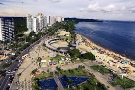
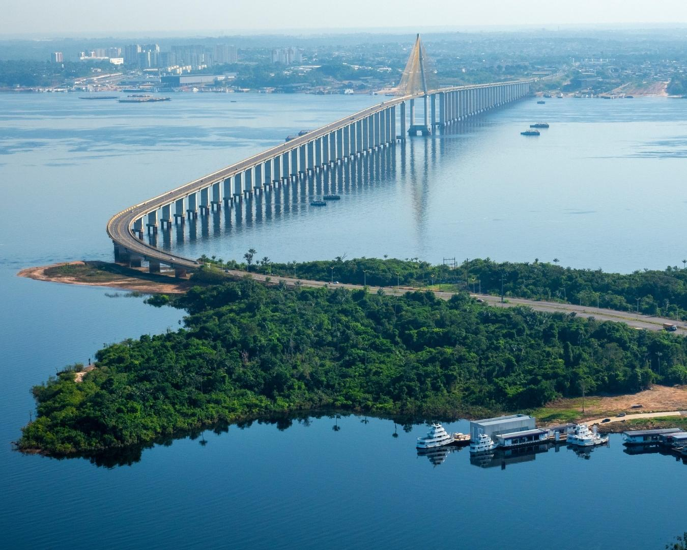

Biodiversidade Amazônica: Manaus está localizada em uma das regiões mais biodiversas do planeta, abrigando uma imensa variedade de espécies vegetais e animais. A floresta amazônica ao redor da cidade é o lar de milhares de espécies, muitas das quais ainda desconhecidas pela ciência.
Encontro das Águas: Um dos fenômenos naturais mais impressionantes de Manaus é o Encontro das Águas, onde as águas barrentas do Rio Solimões encontram as águas escuras do Rio Negro, mas não se misturam imediatamente, criando um espetáculo visual único.
Cultura Indígena: A cultura indígena é uma parte essencial da identidade de Manaus e do estado do Amazonas. A cidade abriga diversas comunidades indígenas que preservam suas tradições ancestrais, contribuindo para a diversidade cultural da região.
Patrimônio Histórico: Manaus possui um rico patrimônio histórico, com construções que remontam ao ciclo da borracha, período de grande prosperidade econômica da cidade no final do século XIX e início do século XX. O Teatro Amazonas, o Mercado Municipal Adolpho Lisboa e o Palácio Rio Negro são exemplos emblemáticos desse período.
Gastronomia Amazônica: A gastronomia de Manaus é uma fusão de influências indígenas, europeias e africanas, resultando em pratos únicos e saborosos. Peixes como o tambaqui e o pirarucu, frutas exóticas como o cupuaçu e o açaí, e iguarias como o tacacá e o pato no tucupi são algumas das delícias da culinária amazônica.
Turismo Sustentável: O turismo sustentável é uma importante fonte de renda para Manaus e para as comunidades que vivem ao redor da cidade. O ecoturismo, passeios de barco pela floresta, observação de aves e a pesca esportiva são atividades populares que permitem aos visitantes explorar a riqueza natural da região de forma responsável.
Artesanato Regional: O artesanato é uma expressão importante da cultura local em Manaus. Os indígenas produzem uma variedade de peças, como cestaria, cerâmica e artigos de madeira, que representam suas tradições e técnicas ancestrais.
Pesquisa Científica: Manaus é um importante centro de pesquisa científica, especialmente no campo da biologia e da ecologia. Instituições como o Instituto Nacional de Pesquisas da Amazônia (INPA) e a Universidade Federal do Amazonas (UFAM) contribuem para o estudo e a preservação da biodiversidade amazônica.
Festivais e Eventos: A cidade de Manaus é palco de diversos festivais e eventos ao longo do ano, que celebram a cultura, a música, a dança e as tradições da região amazônica. O Festival Folclórico de Parintins, realizado na cidade vizinha de Parintins, é um dos eventos mais populares e coloridos da região.
Desenvolvimento Econômico: Nos últimos anos, Manaus tem se destacado como um importante polo industrial na região norte do Brasil, com a instalação de Zonas de Processamento de Exportação (ZPEs) e incentivos fiscais para a produção de bens manufaturados. Isso tem impulsionado o desenvolvimento econômico e a geração de empregos na cidade e na região.
